California
November 2026 · San Francisco Bay Area, Los Angeles, Joshua Tree
November in California, which declined to be just one landscape.
San Francisco Bay Area
A morning up top, looking over hills full of fog — i still don't have a proper name for the spot — then down to a grey beach, then into Muir Woods. Redwoods, sun through the trees, the usual problem of a camera being too small. Later: a church lit green at night, a ferris wheel on the water, a Christmas tree in the rain, the pyramid building downtown, and a department store that had taken the holidays very seriously.

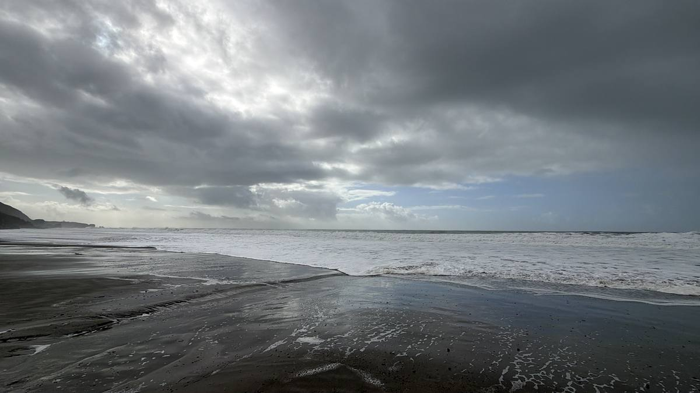
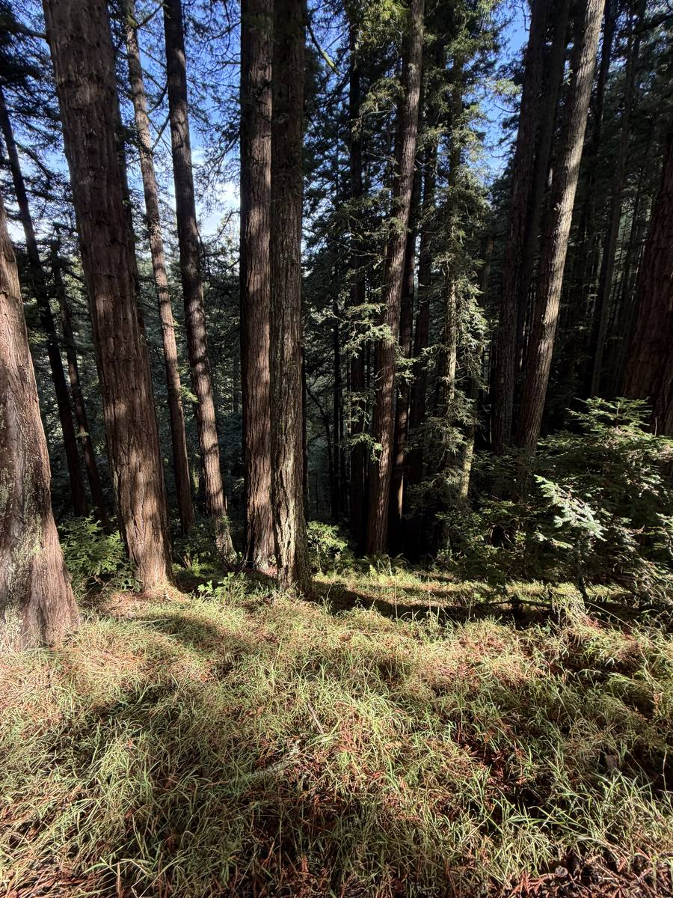

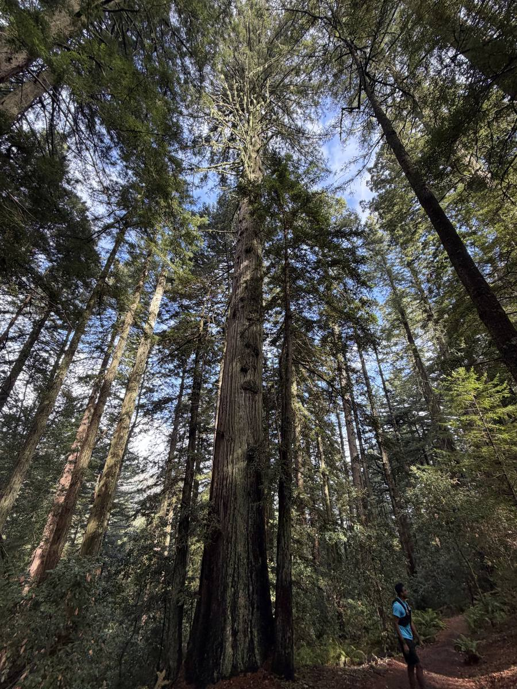
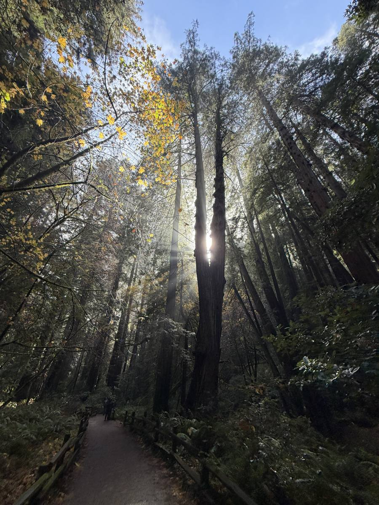


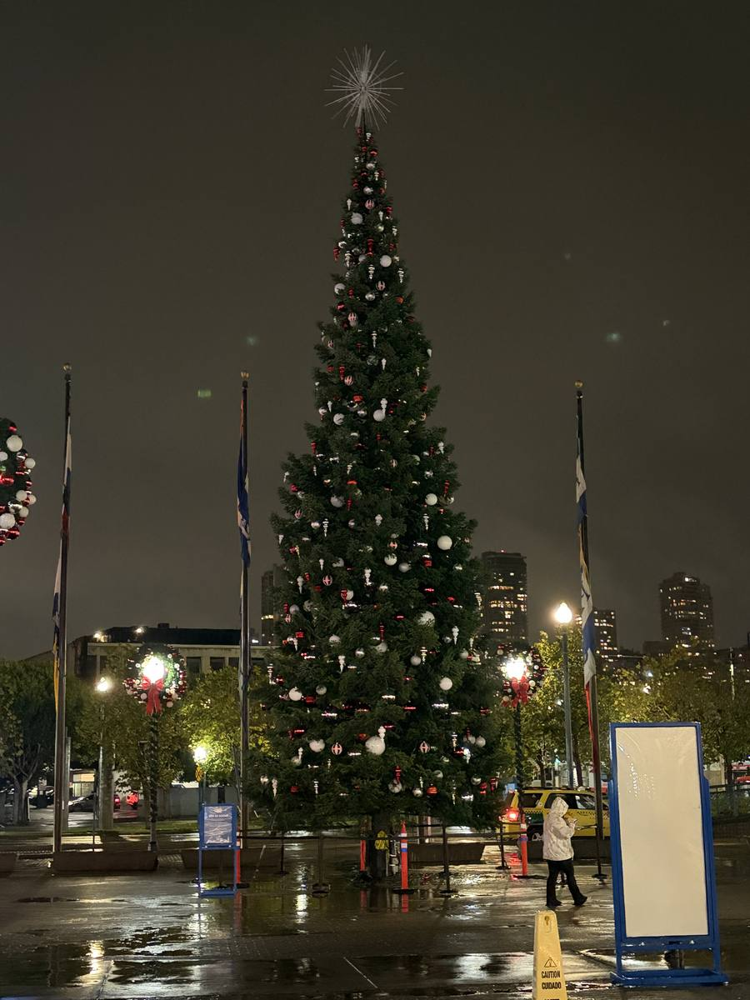
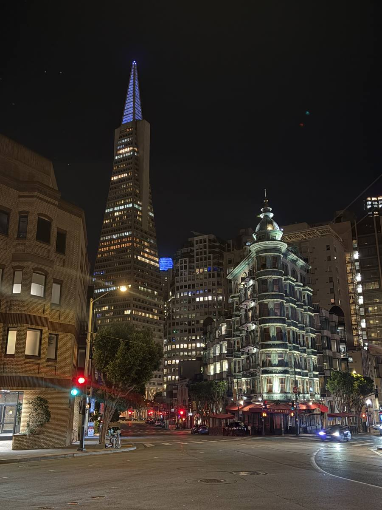

Clips
Los Angeles
A sunrise hike with a sign that actually says Dante's View, the city spread out underneath, and the Hollywood sign sitting on a hill like it's been waiting. Palms and a low sun at the beach, then the Walk of Fame — stars underfoot, a theater marquee, the usual amount of traffic.
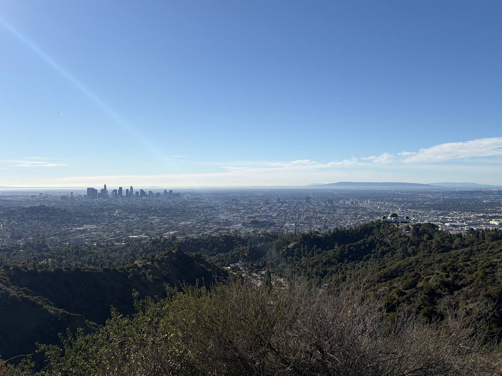

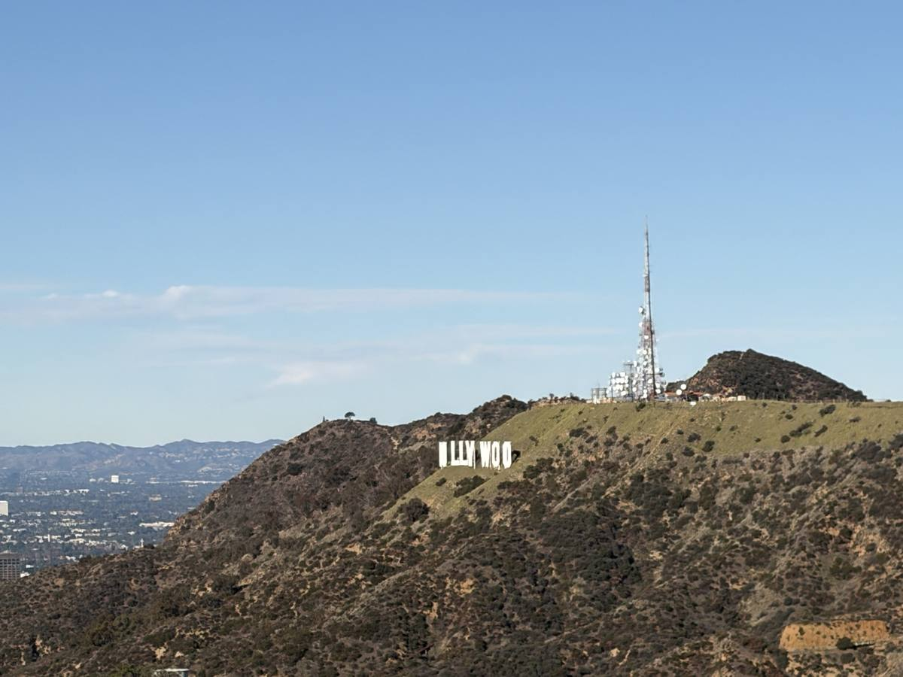
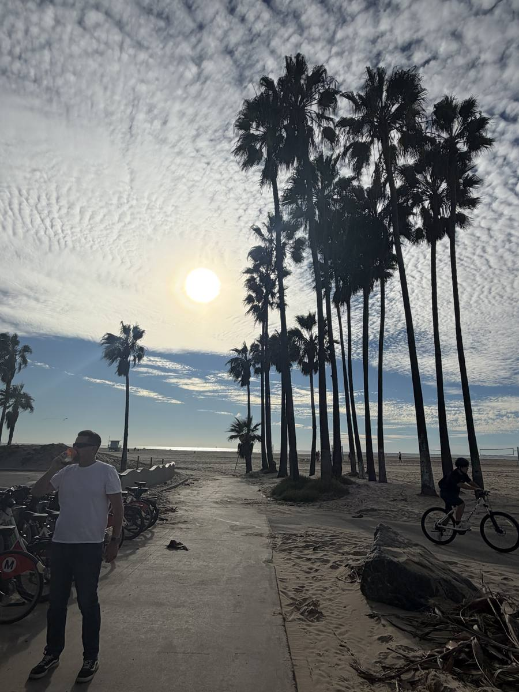

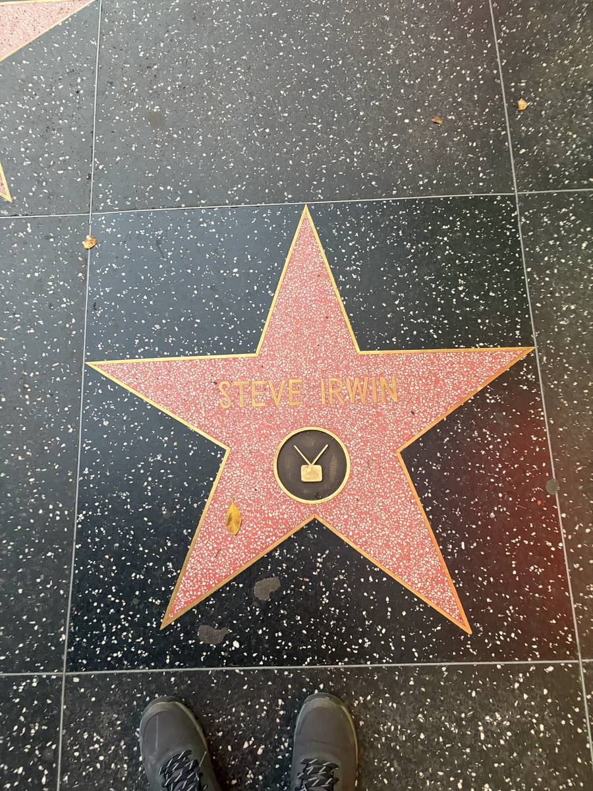
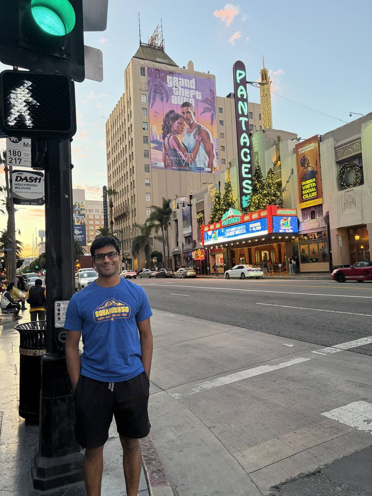
Clips
Joshua Tree
A tent, a fire, a night in the desert. In the morning: pale rock, a bit of climbing, and actual Joshua trees, which look exactly as weird as they sound. Then a long drive into a sunset that was doing too much, in the best way.
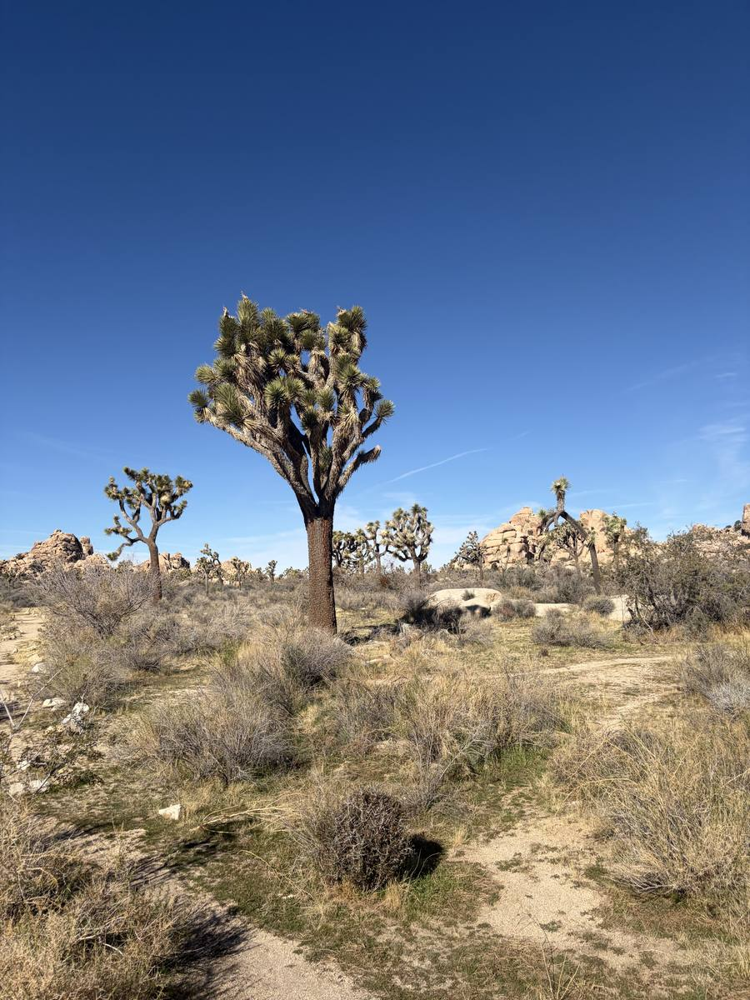
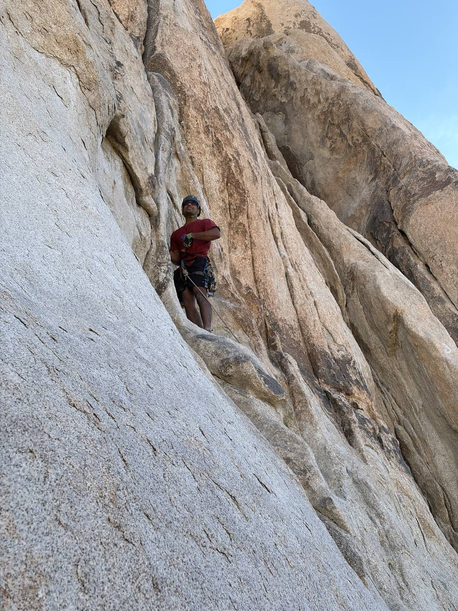
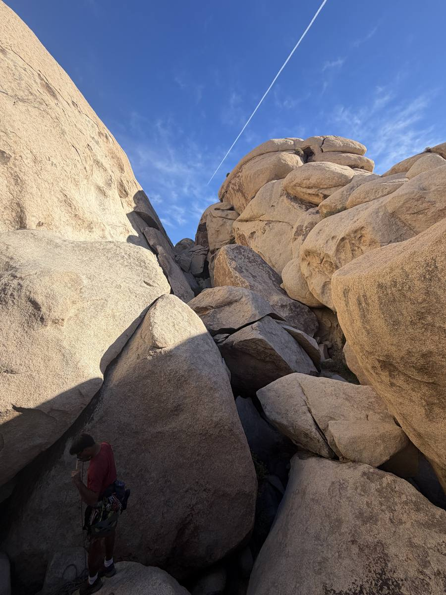